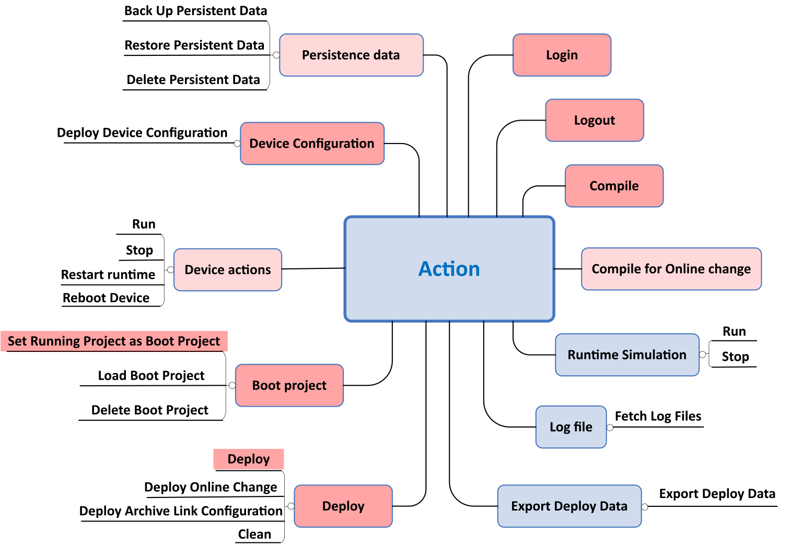

EcoStruxure Automation Expert supports the following commands executed in the Action menu of the Deploy and Diagnostic editor:

Deploy: The compiled project is transferred from EcoStruxure Automation Expert to the targeted devices where it is parsed into an executable application in the non-volatile memory of the device.
Clean: Executable application in RAM is erased.
Set Active Project As Boot Project: On the user’s explicit request, the executable application with any subsequent changes is backed up to the Flash area. Flash memory helps protect the application against corruption or loss, whatever the circumstances the EcoStruxure Automation Expert platform may encounter. Forced values are not saved in the boot project.
Load Boot project: This allows the user to load an existing boot project from the Clean state (e.g. after the device is manually cleaned, instead of powering up.)
Delete Boot project: This cleans the boot project in flash memory.
RUN: Starts the event execution. All E_RESTART.COLD_START will be fired.
STOP: Event execution is stopped, and because this is an event-driven system, the internal state cannot be changed without an event. Stopped state is more a “pause” state, i.e., the state of function blocks is frozen in the previous state (watch remains possible). Function blocks do not return to their initial state. Considering this, returning to Running state from Stopped state is not possible and Run action is disabled in EcoStruxure Automation Expert. Thus, the user has to perform a Reboot device, Clean or Restart Runtime action to be allowed to use again Run action.
Deploy Online Change: Can be done during Running State.
Event execution is not disturbed during online change.
Hardware configuration cannot be changed by online change, but can be re-parametrized depending on the fieldbus.
The online changes are automatically backed up to the flash to allow undo / redo user actions for continuous process application. If an online change has failed, EcoStruxure Automation Expert supports automatic roll-back of the application before online change is issued.
Deploy Device Configuration: EcoStruxure Automation Expert action for sending configuration to the device (NTP Setting, OPC UA server settings).
To deploy new parameters to a device, the user has to perform a Reboot Device or a Restart Runtime command. Both actions will clean the existing (if any) running application and break/stop all existing communication.
|
Nature of Change |
After Restart Runtime action |
After Reboot Device action |
|---|---|---|
|
Runtime Configuration (change deploy port) |
Effective |
Effective |
|
OPC UA Stack Configuration (change server port) |
Effective |
Effective |
|
NTP Server (change server address) |
Not Effective |
Effective |
Restart Runtime: Boot project is loaded and controller goes to Running, Stopped, or previous state depending on parameter Behavior on reboot. Persistent data are not modified.
Reboot Device: Boot project is loaded and controller goes to Running, Stopped or previous depending on parameter Behavior on reboot.